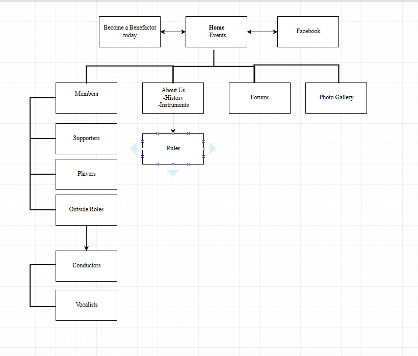

CP1406 - 2016 Group Project Plan
Group 15
Members: Matthew Barge, Andrew Campbell, Sanita Rose, David Nolan
Goals
Redevelop Barrier Reef Orchestra Website.
To inscrease attendance at concerts.
To get more of the younger genrerations involved with the concerts/orchestra.
To create awareness for the orchestra and get more of a wider community involved.
Increasing the number of memebers and attendance at concerts will in return create better revenue.
Success Evaluation
The success of the finished Barrier Reef Orchestra website will be determined on the attendance rates and reviews after 3 months of the new website being online. After the 3 month period is up, if the number of members attending the concert increases by a noticable amount, and the number of reviews has increased, then only then will the website be deemed succesful. The website will be deemed successful after the period of time if more people are atending the concerts and if more of the younger audience are amoung the attendance.
Target Audience
People who enjoy music
Younger Audience
The website will be created in an easy to use, simple design so it is easy to navigate and easy to get around. This will appeal to the younger members as they do not want to be spending a long time trying to figure out how to use the website and navigate it. This will also appeal to the older audiences as well, as navigating a website might be hard for them so making it easier will make them want to stay on there longer.
Content
Home
Members
About Us
Forums
Photo Gallery
Site Flowchart

Project Links
Comps
Developed Pages